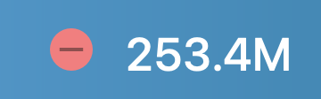
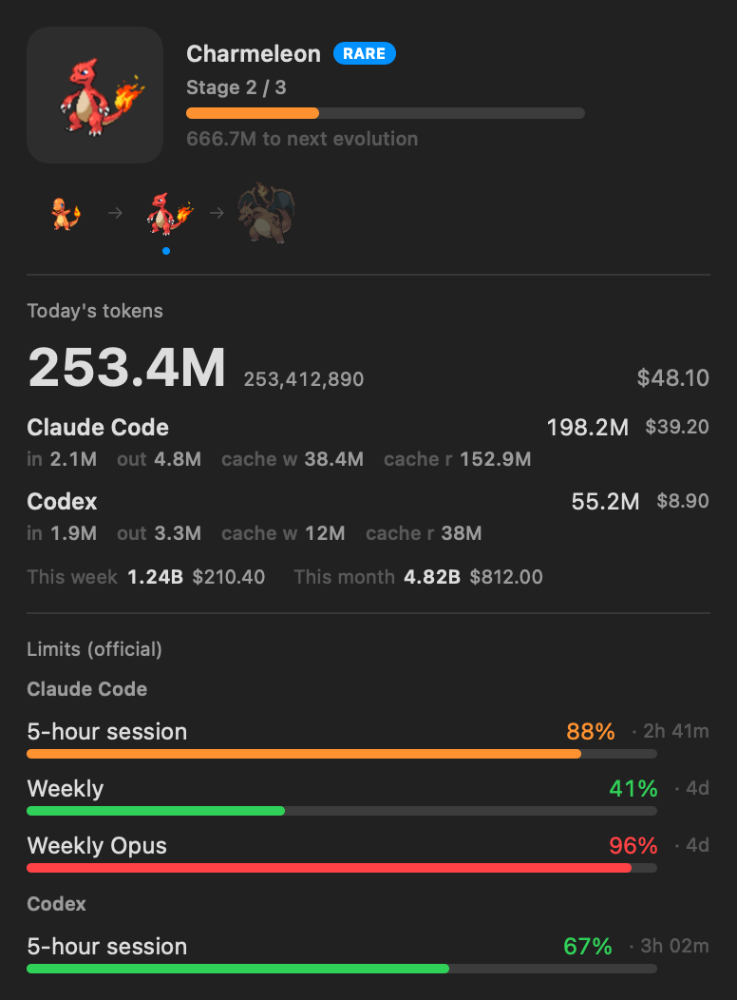

macOS menu bar · Claude Code + Codex


Your AI coding tokens, hatched into Pokémon.
PokeTokenBar shows how many tokens you've burned today — right in your menu bar — and turns that usage into a growing Pokémon companion. Spend tokens, hatch an egg, evolve it, graduate it into your Pokédex, and start again.

